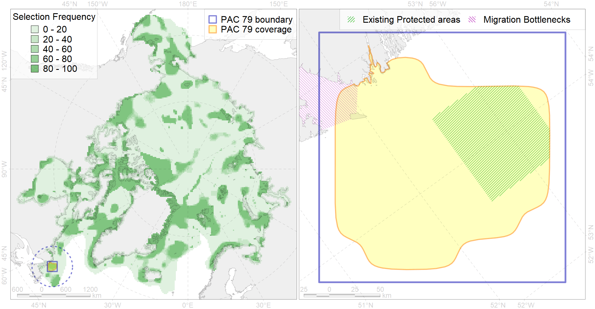

Region 79
Region 79
“ArcNet” scenario 33 achievement for region 79.
Use Accenter for advanced mode.

0
CFs inside of Region completely
1
CFs inside of Region at quarter
3
Complete-targets achievement by Region
5
Half-targets achievement by Region
| CF | Name | Target Achievement for Region | Proportion of Target Achievement in Region | Amount Proportion in Region |
|---|---|---|---|---|
| 2024 | Harp seal whelping areas in the Front and the St Lawrence region | 94.4% | 88.3% | 50.8% |
| 2030 | Hooded seal wheling areas in the Front region | 44.8% | 44.3% | 20.4% |
| 3023 | Marginal Ice Zone distribution in April in the Labrador Sea LME | 101.2% | 29.7% | 13.9% |
| 5050 | Fin whale summer feeding areas in the Northwest Atlantic | 37.9% | 20.1% | 11.7% |
| 6055 | Common eider (Somateria mollissima borealis) NE Canada wintering grounds | 11.7% | 11.7% | 9.9% |
| 7145 | III.2.1.4. Ungava -Labradoran shelf | 162.0% | 21.8% | 8.9% |
| 5060 | Humpback whale summer feeding areas in the Northwest Atlantic | 31.6% | 14.4% | 8.5% |
| 4080 | Fish zoogeography, Deepsea Atlantic Region, North-Atlantic Abyssal Province (11A -Scandian, 11B - Central-Arctic and 11C - Baffin Deep-sea Districts ) | 104.1% | 18.5% | 6.5% |
| 6041 | Ivory gull (Pagophila eburnea) postbreeding grounds in the Canadian Arctic | 17.1% | 6.6% | 4.4% |
| 6034 | Ivory gull (Pagophila eburnea) Atlantic wintering grounds | 14.5% | 7.3% | 3.7% |
| 4028 | Feeding/migration area of the Atlantic salmon (Salmo salar) American populations (F27) | 19.8% | 6.3% | 2.8% |
| 4056 | Distribution of the American Plaice (Hippoglossoides platessoides) (F 47), European populations | 61.9% | 3.9% | 2.2% |
| 4031 | Feeding area of the Brook Trout (Salvelinus fontinalis) (F 29) | 11.8% | 4.9% | 2.0% |
| 2019 | Harbour seal range in the North Atlantic region | 25.7% | 3.9% | 1.8% |
| 6076 | Common murre (Uria aalge aalge) wintering grounds | 8.2% | 4.4% | 1.8% |
| 4049 | Range of the Haddock (Melanogrammus aeglefinus) (F 42) | 23.6% | 3.8% | 1.7% |
| 6049 | Black-legged kittiwake (Rissa tridactyla tridactyla) wintering grounds | 3.5% | 3.5% | 1.3% |
| 9005 | polar bear of the DS (Davis Strait) subpopulation distribution | 2.8% | 2.1% | 1.0% |
| 6072 | King eider (Somateria spectabilis) Canadian winetring grounds | 0.6% | 0.5% | 0.9% |
| 4046 | Range of the Thorny Skate (Amblyraja radiata) (F 3) | 10.2% | 1.9% | 0.9% |
| 4045 | Feeding/migration area of the Pink Salmon (Oncorhynchus gorbuscha), native distribution (F23) | 11.0% | 1.8% | 0.8% |
| 4059 | Range of the Greenland Halibut (Reinhardtius hippoglossoides) (F 49) | 21.6% | 1.8% | 0.8% |
| 6083 | Thick-billed murre (Uria lomvia lomvia) wintering grounds | 2.5% | 1.7% | 0.7% |
| 4003 | Range of the Atlantic Capelin (Mallotus villosus) (F10) | 19.4% | 1.6% | 0.7% |
| 4017 | Feeding/ migration area of the Greenland Shark (Somniosus microcephalus) (F1) | 2.5% | 1.5% | 0.6% |
| 4085 | Fish zoogeography, Arctic Region, Subarctic Transitional-Atlantic Province, Labrador – S Greenland District | 5.1% | 1.1% | 0.6% |
| 4048 | Feeding/nursery area of the ogac (Gadus ogac ) (F 41) | 3.0% | 0.7% | 0.5% |
| 6002 | Little Auk (Alle alle alle) winetring grounds | 1.8% | 1.2% | 0.5% |
| 4055 | Range of the Shorthorn Sculpin (Myoxocephalus scorpius) (F 46), American populations | 8.8% | 0.5% | 0.3% |
| 6015 | Black guillemot (Cepphus grylle mandti) breeding grounds | 1.0% | 0.2% | 0.3% |
| 4029 | Feeding area of the Arctic charr (Salvelinus alpinus), anadromous populations (F28) | 0.5% | 0.4% | 0.2% |
| 2050 | Ringed seal whelping areas in the Labrador region | 0.2% | 0.1% | 0.1% |
| 4041 | Range of the Polar Cod (Boreogadus saida) (F35) | 0.2% | 0.1% | 0.0% |